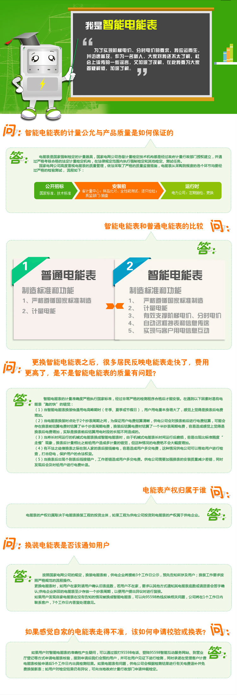
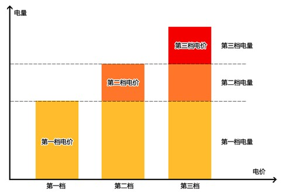

您目前所在的位置
前往您办理所需业务的路径

 三型一化A级厅（本厅）
三型一化A级厅（本厅） 非三型一化厅
非三型一化厅 在配电室、变电站、高压线路等供电设施附近居住对人体不会有伤害。
1.首先配电室、变电站、高压线路等供电设施不会产生电磁辐射，这是因为交流输变电设施是通过电磁感应对周围环境产生影响的,产生的工频电场和工频磁场属于极低频场，其频率只有50赫兹，波长很长，达6000公里，而输电线路本身，由于其长度一般远小于这个波长，因此不能构成有效的电磁辐射（频率在100千赫兹及以上的才能形成辐射）。在国际权威机构的文件中，交流输变电设施产生的电场和磁场被明确地称为工频电场和工频磁场，而不是电磁辐射。电网企业的员工长时间从事输变电设施的运行和维护工作，也没有发现员工身体健康受到电网设备电磁场的不良影响。
2.配电室、变电站、高压线路等供电设施的设立与规划都是经过市规划局、环保局的严格审批，符合环境安全标准，对人体的健康是没有危害的。
“嗞嗞”的声音是因为输电线路在空气中局部电晕放电造成的，雨雾天气往往会大一点。电火花是电晕放电，没有危险。输电线路投运一段时间后这种现象会有所减少。不会对人体产生伤害。

一、阶梯电价简介
为促进资源节约型和环境友好型社会建设，引导居民合理用电、节约用电，我国开始对居民用电实行阶梯电价。阶梯电价是阶梯式递增电价或阶梯式累进电价的简称，是指把户均用电量设置为若干个阶梯分段或分档次定价计算费用。截止2012年底，全国29个省市均已公布执行方案。
二、阶梯电价实施范围
国家电网供电范围内的“一户一表”城乡居民用电户。
“一户一表”：居民用户原则上以住宅为单位，一个房产证明对应的住宅为一“户”。没有房产证明的，以供电企业为居民安装的电表为单位。
各省市电力公司对阶梯电价实施范围有更详细的规定。
三、阶梯电价结算周期
不同省份对于阶梯电价的结算周期可能有所不同，大多以日历年为单位。如北京、黑龙江均以年用电量为计费周期，即以年度各抄表周期累计满12个月的用电量作为计算阶梯电价分档电量标准，电费采取按抄表周期预结算、年度清算方式。年度用电量未达到阶梯电价分档电量标准的跨年不结转。
四、居民阶梯电价电费的计算
将居民月用电量按照满足基本用电需求、正常合理用电需求和较高生活质量用电需求划分为三档，电价实行分档递增。
总用电量＝第一档用电量+第二档用电量+第三档用电量
第一档电费＝第一档用电量*第一档电价
第二档电费＝第二档用电量*第二档电价
第三档电费＝第三档用电量*第三档电价
总电费＝第一档电费＋第二档电费＋第三档电费
具体如下图所示：

（1）人身触电死亡；
（2）导致电力系统停电；
（3）专线掉闸或全厂停电；
（4）电气火灾；
（5）重要或大型电气设备损坏；
（6）停电期间向电力系统倒送电。
供电企业接到用户上述事故报告后，应派员赴现场调查，在七天内协助用户提出事故调查报告。